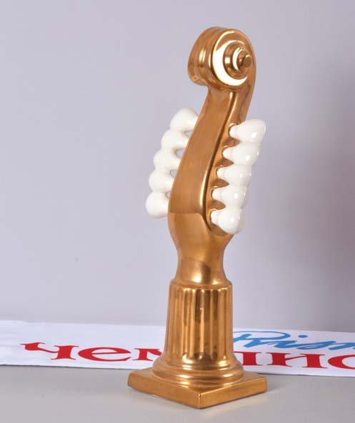

Призмачемпіонат · журнал «ДентАрт» 2015 №2
XXII Призмачемпіонат — умови 2015 року
XXII PRISMACHAMPIONSHIP — CONDITIONS OF PARTICIPATION IN 2015

Клінічні змагання в мистецтві прямої реставрації зубів під назвою Призмачемпіонат є першим конкурсом професійної майстерності в стоматології нашого часу і мають 22-річну історію, пройшовши шлях від локального конкурсу до розгалуженого міжнародного чемпіонату!
Спочатку Призмачемпіонат був придуманий як система зворотного зв'язку зі стоматологами, які пройшли практичні курси з художньої реставрації зубів у нашому навчальному центрі, і отримав свою назву від реставраційного матеріалу Призма ЕйПіЕй — провідного на той далекий час матеріалу в реставраційній програмі «Дентсплай». Тоді в Полтаві, починаючи з 1992 року, під егідою Української медичної стоматологічної академії та у співпраці з фірмою «Дентсплай» навчали прямій реставрації зубів з використанням цього матеріалу на основі власного біоміметичного підходу до реставрації та практичного досвіду.
Реставрація зубів не публічна за своєю суттю, тому клінічні змагання покликані зняти «завісу секретності», допомагаючи тим самим і пацієнтам, і стоматологам, і викладачам, і організаторам охорони здоров'я!
Напередодні клінічних змагань ми зазвичай кажемо фіналістам під час жеребкування, що хтось буде визнаний журі Призма-чемпіоном (наявність переможця — це необхідний формат будь-якого змагання), і він/вона отримає і Золоту віолончель, і більшість призів… Але головне полягає зовсім в іншому — усі фіналісти виконають реальні реставрації в контрольованих умовах з подальшим публічним обговоренням, і саме це допоможе багатьом стоматологам піднятися на вищий рівень у професії, пацієнтам — вберегтися в пошуках уявного ідеалу стоматологічного здоров'я, викладачам — скоригувати програму навчання прямій реставрації зубів, а організаторам охорони здоров'я — врахувати результати у плануванні стоматологічної допомоги населенню!
За свою історію Призма-чемпіонат двічі не визначив чемпіона. Перший раз це сталося 1999 року, коли всі фіналісти так повелися з ясенним краєм під час реставрації зубів, що журі просто визнало це неприйнятним і відмовилося визначати найкращого…
Після цього в критеріях оцінки реставраційних робіт з'явився розділ про дотримання здоров'я пацієнта. Другий раз це сталося торік, коли чемпіони Грузії та Росії не приїхали на міжнародний фінал у Полтаву… Через неявку можна було б оголосити Призма-чемпіоном чемпіона України, але ми не вважали це можливим без проведення реальних клінічних змагань. Адже саме самі змагання є предметом Призма-чемпіонату, а не визначення переможця!
Місія і цілі Призмачемпіонату
Крок за кроком Призма-чемпіонат сформував свою місію в прямій реставрації зубів — контрольоване виконання з подальшим публічним обговоренням...
З роками визначилися й чіткі цілі Призма-чемпіонату у виконанні своєї місії:
- моніторинг реставраційної майстерності для викладачів;
- моніторинг реставраційної майстерності для організаторів охорони здоров'я;
- професійні приклади стоматологам для калібрування;
- публічні приклади пацієнтам для вибору стоматолога;
- відпрацювання елементів системи контролю якості реставрації;
- популяризація технологій і матеріалів для прямої реставрації;
- просування талановитих стоматологів;
- надання стоматологічної допомоги конкретним пацієнтам;
- поліпшення іміджу стоматології в суспільстві.
Із широким поширенням професійного спілкування в соціальних мережах публічність Призма-чемпіонату дещо втратила початкову актуальність, однак соціальні мережі не можуть замінити принцип контрольованого виконання та оцінки прямої реставрації. Тому проведення клінічних змагань стоматологів у мистецтві реставрації зубів, як і раніше, залишається актуальним!
Формула XXII Призмачемпіонату
Ми вирішили в організації Призма-чемпіонату повернутися до початкової формули, коли клінічні змагання проводилися в одному місті. У такому дизайні Призма-чемпіонату кількість етапів змагань скоротиться до двох — віртуального і клінічного, а для збереження міжнародного статусу до клінічних змагань допускатимуться стоматологи з будь-яких країн, які мають досвід роботи з реставраційними матеріалами «Дентсплай», незалежно від країни проживання та країни професійної активності, зокрема фіналісти та переможці Призма-чемпіонату попередніх років.
Отже, буде два тури змагань…
Перший тур — віртуальний
У першому турі змагання Призма-чемпіонату проводяться за авторськими фотографіями реставрації верхніх передніх зубів.
Віртуальний тур проводиться з 1 червня по 31 липня 2015 року, а заявки на участь приймаються до 1 серпня.
Для участі в Призма-чемпіонаті необхідно надіслати заявку в оргкомітет через сайт www.prisma-champion.org, сторінку у Фейсбуці або на електронну адресу оргкомітету info@apollonia.ua:
- ім'я та прізвище учасника, місце роботи, адреса, телефон для контактів;
- підтвердження, що реставраційні роботи на фотографіях виконані самим учасником і з використанням матеріалів «Дентсплай»;
- якісні кольорові фотографії 5 випадків реставрації верхніх передніх зубів (до реставрації, після препарування, на етапах реставрації, після полірування, через кілька днів і у віддалені терміни).
Заявлені реставрації зубів мають бути справді виконані самим учасником з використанням матеріалів «Дентсплай».
На веб-сторінці Призма-чемпіонату та на сторінці у Фейсбуці будуть представлені всі заявлені реставраційні роботи учасників з можливістю професійного обговорення та оцінки українською, російською та англійською мовами.
5 серпня Міжнародне журі Призма-чемпіонату ухвалить рішення про запрошення на 6 робочих місць клінічного туру тих стоматологів, чиї реставраційні роботи будуть визнані найкращими з урахуванням віртуального обговорення. Півтора місяця, що розділяють віртуальний і клінічний тури, дозволять учасникам Призма-чемпіонату, запрошеним на Міжнародний фінал, краще підготуватися до поїздки в Полтаву (пройти практичні курси, потренуватися, налаштуватися, організувати вболівальників).
Другий тур — клінічний
У другому турі (клінічному) проводиться контрольоване виконання прямої реставрації вітальних верхніх передніх зубів матеріалами «Дентсплай» у стоматологічній клініці-студії «Аполлонія» в Полтаві.
Фінальні клінічні змагання відбудуться 22 вересня 2015 року. Стоматологи, запрошені рішенням журі першого туру до участі в другому турі, повинні будуть виконати реставрацію зубів композитами Естет-Ікс, Спектрум або Церам-Ікс в обсязі, еквівалентному 6-12 пломбам, упродовж до 8 годин роботи в чотири руки з асистентом під контролем лікаря-інструктора з обов'язковою ізоляцією робочого поля раббердамом.
Враховується лише «чистий час» — час безпосередньої роботи з пацієнтом у стоматологічному кабінеті за вирахуванням часу перерв. Під час клінічних змагань доступ до стоматологічного кабінету мають лише відповідальний секретар Призма-чемпіонату та фотограф.
Пацієнтів для проведення клінічного етапу Призма-чемпіонату запрошує клініка-студія «Аполлонія» за показаннями до прямої реставрації вітальних верхніх передніх зубів за відсутності значної ортодонтичної патології. Пряма реставрація зубів проводиться на добровільній і безоплатній основі з клінічною гарантією протягом 3 років. У стоматологічній клініці-студії «Аполлонія» пацієнти мають лікаря за власним вибором, вибір лікаря-учасника проводиться жеребкуванням.
Учасників клінічного етапу визначає Міжнародне журі, вони працюють в окремому стоматологічному кабінеті з асистентом, забезпечуються необхідними інструментами й матеріалами і повинні мати при собі копії лікарського диплома та документа, що підтверджує право самостійної клінічної роботи у своїй країні, медичний одяг і взуття. Учасники можуть використовувати свої інструменти та пристосування, надавши їх для стерилізації. Вибір пацієнта проводиться учасником жеребкуванням.
Асистентів стоматолога призначає клініка-студія «Аполлонія», вони забезпечують технологічно виконувану реставрацію зубів.
Лікарів-інструкторів призначають з числа лікарів-стоматологів клініки-студії «Аполлонія», вони готують пацієнтів до реставрації та відповідають за їхнє здоров'я, дозволяють і контролюють виконання кожного етапу реставрації. На прохання учасника мають право виконати окремі етапи реставрації, повідомивши про це відповідального секретаря та журі. У разі виявлення дій учасника змагань, які можуть завдати шкоди здоров'ю пацієнта, мають право відсторонити учасника від змагань і самостійно завершити реставрацію.
Відповідальний секретар Призма-чемпіонату Ольга Пономаренко організовує комунікацію між усіма дійовими особами чемпіонату, веде сайт www.prisma-champion.org і сторінку у Фейсбуці, протоколює всі результати змагань.
Міжнародне журі під час клінічного огляду пацієнтів оцінить реставровані зуби на ідентичність природним зубам за формою, кольором, прозорістю та якістю поверхні за умови дотримання таких медичних параметрів реставрації, як збереження здоров'я пацієнта, стан ясенного краю, крайова адаптація реставрації, оклюзійні контакти та контактні пункти. Оцінювання робіт буде проведено через 4 дні після виконання реставрації зубів, коли стабілізується зовнішній вигляд реставрованих зубів і ясенного краю.
Міжнародне журі 26 вересня підіб'є підсумки фінальних клінічних змагань і назве ім'я Призма-чемпіона 2015.
| Параметри | Спосіб оцінки | Результат |
|---|---|---|
| Загальний вигляд і пропорції | Візуальна оцінка фронтального вигляду та в дзеркалі в різних напрямках | Відповідність пропорцій і форми естетичним параметрам |
| Вимірювання штангенциркулем і кронциркулем | Відповідність розмірів естетичним пропорціям | |
| Колір | Візуальне порівняння реставрованих і природних зубів за шийкою, центром і краєм | Ідентичність реставрацій природним зубам або їхнім фрагментам |
| Візуальне порівняння реставрованих і природних зубів в ультрафіолетовому освітленні | Ідентичність реставрації та природної основи реставрованого зуба | |
| Спектрофотометрія | Ідентичні дані реставрованих і природних зубів | |
| Прозорість | Візуальне порівняння різального краю, проксимальних поверхонь у прохідному та відбитому світлі в різних напрямках | Ідентичність реставрацій природним зубам або їхнім фрагментам |
| Візуальне порівняння при просвічуванні полімеризаційною лампою | Ідентичність реставрацій природним зубам або їхнім фрагментам | |
| Рельєф і блиск поверхні | Візуальне порівняння з природними зубами у висушеному стані | Ідентичність рельєфу та блиску поверхні реставрацій поверхні природних зубів або їхнім фрагментам |
| Крайове прилягання | Зондування ясенної борозни | Відсутність шорсткості по всьому периметру шийки |
| Перевірка флосом по центру, вестибулярно й орально | Вільне ковзання без розшарування та затримки | |
| Трансілюмінація країв реставрації | Відсутність оптичних меж на поверхні та в глибині реставрованого зуба | |
| Рентгенографія коронок | Плавний перехід реставрації в поверхню зуба, відсутність надлишків | |
| Контактні пункти | Перевірка щільності лавсановою смужкою | Легке введення та виведення з фіксованим зусиллям |
| Візуальне визначення рівня контактних пунктів | Рівень дистального контактного пункту вищий, ніж медіального | |
| Візуальне визначення форми проксимальних поверхонь | Медіальна поверхня пряміша, дистальна — опукліша | |
| Артистичність виконання | Візуальне порівняння з природними зубами у прохідному та відбитому світлі в різних напрямках | Повторення анатомічних та індивідуальних особливостей зубів, їхньої внутрішньої структури і рельєфу поверхні |
| Дотримання здоров'я пацієнта | Мінімальне препарування зубних тканин | Залишення вільної емалі та демінералізованого дентину, відсутність неадекватних пошкоджень |
| Стан ясенного краю | Відсутність неадекватних пошкоджень | |
| Техніка реставрації | Виконання протоколу за інструкцією виробника | |
| Дотримання часу роботи | Виконання реставрацій у межах 8 годин чистого робочого часу |